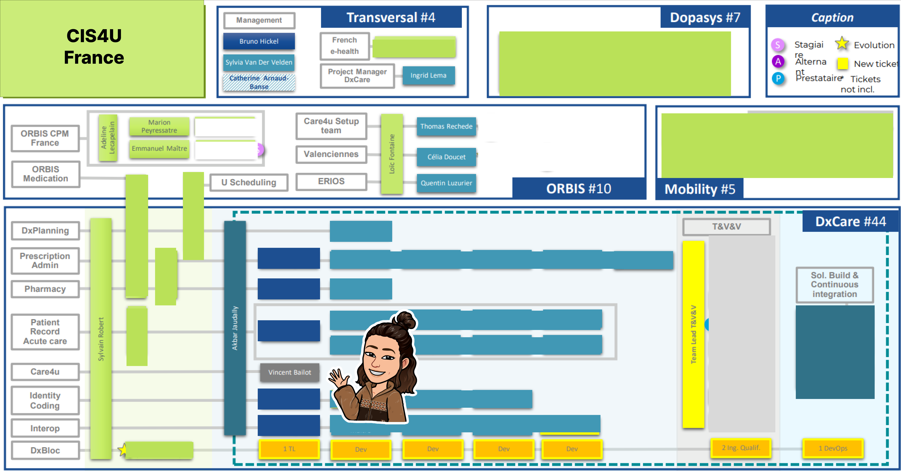
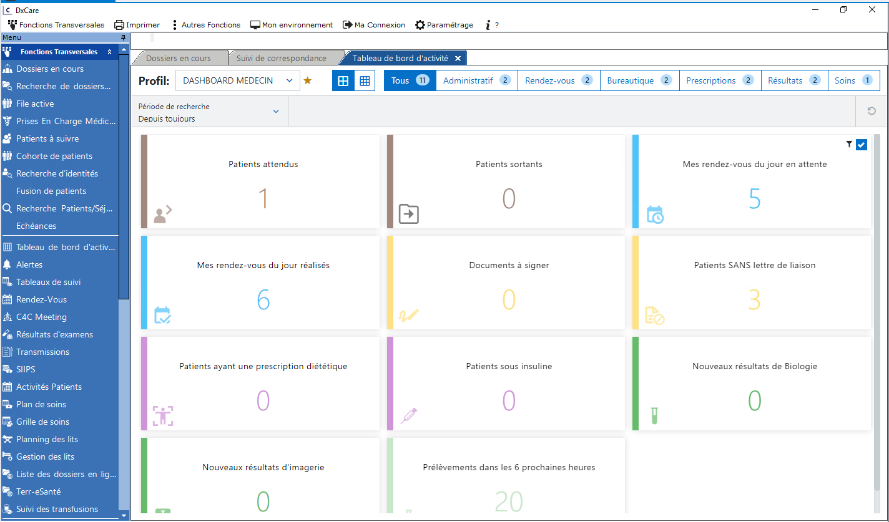
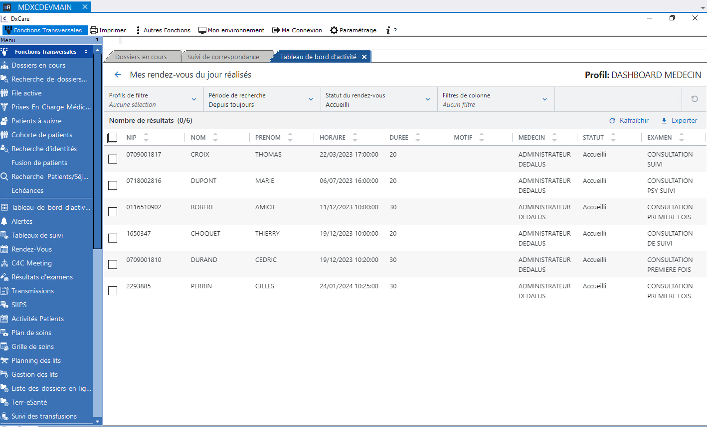
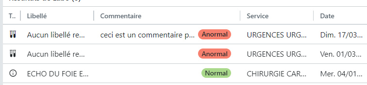
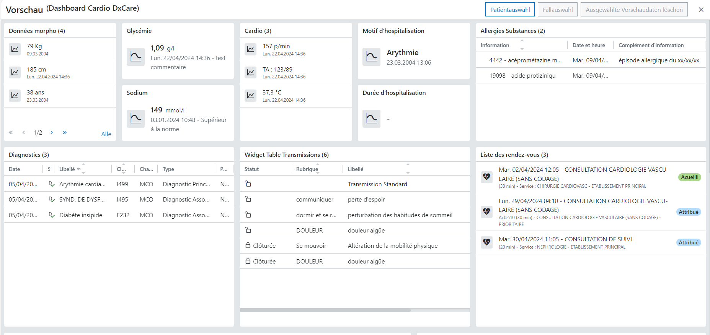

Mon alternance chez Dedalus
Présentation de l'entreprise:
Dedalus Healthcare France est la branche Française de Dedalus Global. Cette entreprise basée au Plessis-Robinson pour ses quartiers à Paris, est spécalisée dans la conception et développement de logiciels de santé .Dedalus née à Florence en Italie en 1982 et devient vite leader en Italie des logiciels de santé.
Par son acquisition du groupe allemand AGFA-GEVAERT en 2020, puis du français DXC Technologiesen 2021, Dedalus devient leader européen , et dans le top 3 mondial dans le secteur de l'informatique de santé.
Dedalus est présent dans 40 pays , touchant plus de 540 million de patients , dans plus de 6700 établissements de santé et 5700 laboratoires.
En France, les solutions Dedalus sont présentes dans 100% des GHT (Groupes hôspitaliers universitaires).
Les solutions proposées par Dedalus vont du logiciel d'aide au diagnostic , au logiciel de billing , des solutions d'imagerie aux Dossiers Patients Informatisés.

Mes missions :
Depuis le 3 juillet 2023, et jusqu'au 9 août 2024 je suis en R&D, dans l'équipe de d'intégration des modules de Care4U dans DxCare. Care4U est le tout nouveau DPI de Dedalus, développé en full web en JavaScript Angular. Totalement responsive (disponible sur Bureau, tablette et smartphone), plus souple et personnalisable par les utilisateurs, DxCare est lui aussi un DPI Dedalus, mais lui client lourd, développé en C# .net.
Le but de Dedalus est de migrer tous ses DPI vers Care4U d'ici 2026. Nous sommes donc, avec mon équipe, en charge d'intégrer les modules Care4U un à un dans DxCare, pour faciliter la transition. Notre équipe était chargée de créer des exemples de formulaires et dashboards pour un hôpital pilote Care4U en France.

Nous avons intégré Trois modules pour l'instant:
- Le module Patient Chart: fait par une autre équipe
- Le module Activity Dashboard : livré depuis fin février
- Le module Patient Dashboard : toujours en cours de développement
Intégration de l'activity Dashboard:
L'Activity Dashboard est un module qui offre au personnel soignant une vue d'ensemble, 100% personnalisable, de son service de soins. C'est une juxtaposition de plusieurs tuiles, appelées indicateurs, qui remontent des données dont le professionnel a besoin.
De plus, une fois que l'on choisi un des indicateurs, on se retrouve, soit dans le favori DxCare correspondant, soit avec la liste des résultats remontés.

Mes missions sur l'Activity Dashboard:
- - Garder à jour le wiki du projet,
- - Rédiger la documentation utilisateur sur les composés intégrés et leur utilisation,
- - Implémentation de différentes fonctionnalités dans le code,
- - Correction d'éventuels bugs.
Intégration du Patient Dashboard:
Là ou l'Activity Dashboard offrait une vue d'ensemble sur un service de soin, le Patient Dashboard lui, offre une vision globale pour un patient donné, dans un service donné. Un Patient Dashboard est formé de plusieurs Widgets, récupérant chacun une ou plusieurs informations, assemblables, ajustables et personnalisables par l'utilisateur. Ces widgets récupèrent les données de santé d'un et d'un seul patient. Comme ici les bilans de laboratoires du patient
Voici un exemple de Patient Dashboard pour un patient hospitalisé dans un service de cardiologie.

Mes missions sur le Patient Dashboard:
- - Garder à jour le wiki du projet,
- - Implémentation de différentes fonctionnalités dans le code,
- - Récupération puis traitement des informations.
- - Création des widgets selon les types de données récupérées.
- - Création des Patient Dashboards.
Mon attestation de travail
Ma fiche de synthèse
Mon CV